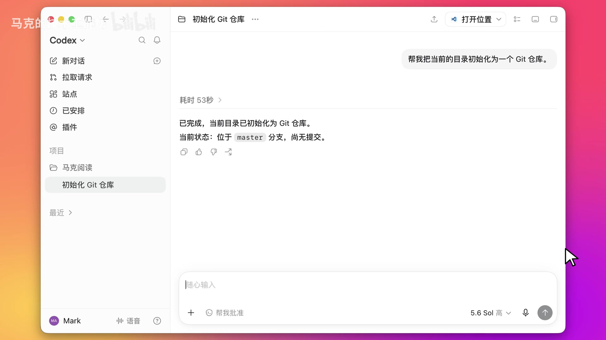
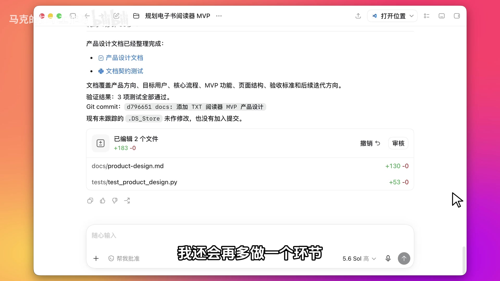
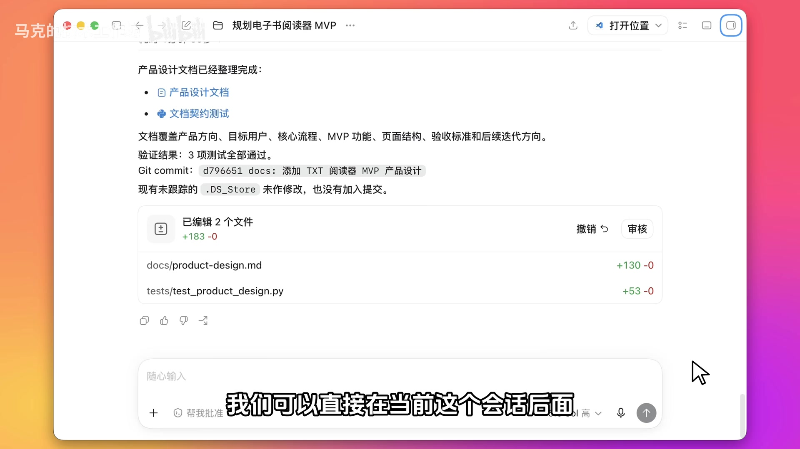
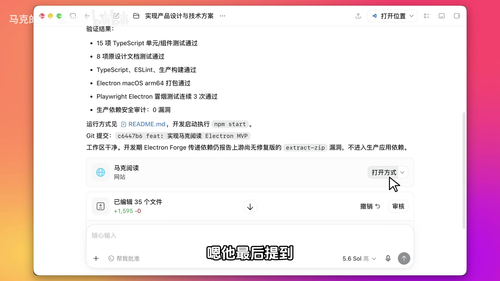
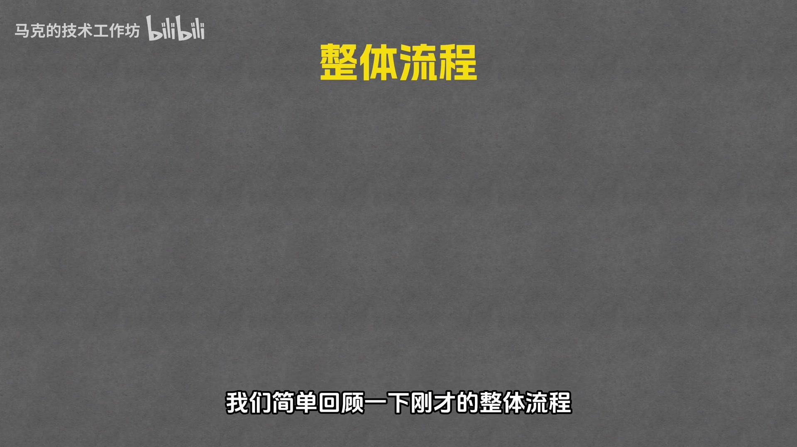
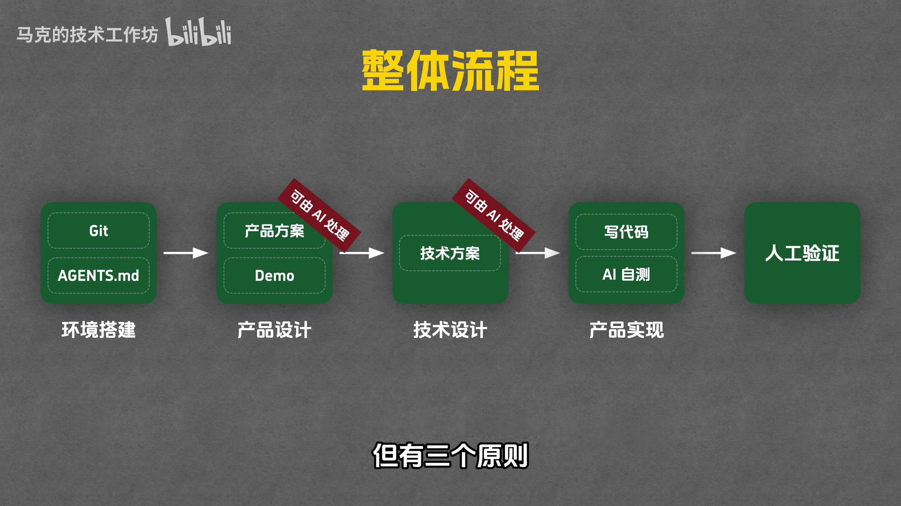

如何用 AI 稳定交付一个高质量的产品 —— 从环境搭建到人工验证的完整工作流
AI 编程不是"发指令就完了"，而是一套完整的工作流
很多人以为用 AI 编程就是给 Codex / Claude Code 发一条指令，然后等它把软件做出来。但实际上，AI 做出来的效果往往跟预期相差甚远，还可能有大量 Bug。
这个视频分享了一套经过验证的 AI 编程工作流，通过 5 个步骤，让你能够稳定交付高质量的产品：
选一款适合自己的 AI 编程工具
| 工具 | 特点 | 适合人群 |
|---|---|---|
| Codex | 功能最完善，OpenAI 出品，支持多种模型 | 大多数用户首选 |
| Claude Code | Anthropic 出品，擅长长上下文 | 需要处理大项目 |
| OpenCode | 开源方案 | 喜欢自定义 |
| PyCode | Python 专用 | Python 开发者 |
工欲善其事，必先利其器
让 AI 帮你把项目目录初始化为 Git 仓库。Git 是版本管理工具，每做完一个功能就保存一个版本，这样代码改乱了也能一键回退。

agents.md 相当于给 AI 的项目说明书，每次开启新会话时 AI 会优先读取它，快速了解项目背景和开发规范。
视频中设置的两条核心规则：
明确要做什么，不做什么
MVP = Minimal Viable Product（最小可用产品）
第一版只做最核心、最必要的功能，先把产品主流程跑通，其他功能以后慢慢加。
不要直接让 AI 开始写代码，而是先跟它讨论产品设计：

Demo 是一个可以操作的前端界面，后端逻辑还没实现，数据是模拟的。主要目的是让用户体验界面交互和操作流程。
做 Demo 的两个好处：
确定技术方案，尤其是技术栈和架构

产品设计完成后，新开一个会话（让讨论更聚焦），跟 AI 讨论技术方案：
讨论确认后，让 AI 写一份技术方案文档，放在 docs 文件夹里，作为后续编码的参考。
让 AI 写代码，并给它自测的能力
在正式让 AI 写代码之前，先安装必要的插件，让 AI 能够自己验证结果：
| 插件 | 作用 |
|---|---|
| computer use | 让 AI 能够操作电脑（点击、输入等） |
| chrome | 让 AI 能够查看 Chrome 页面 |
新开一个会话，把产品设计文档和技术方案文档都给 AI 看，然后让它根据要求实现产品。
AI 写完代码后，会自动运行测试，确保符合 agents.md 里的要求（每次改动后必须测试通过才能交付）。
亲自上手体验，发现问题就让 AI 修改

AI 的自测只能尽可能提高代码的可靠性，帮它先发现一些明显的问题，但不能保证最终交付出来的产品就一定没有 Bug。
真正用起来怎么样，还是得我们自己亲自验证之后才知道。
5 步标准流程 + 3 个不能省的原则

| 步骤 | 内容 | 说明 |
|---|---|---|
| 1. 环境搭建 | 初始化 Git、写 agents.md | 一次性工作，后续复用 |
| 2. 产品设计 | 明确做什么、不做什么，可选做 Demo | 每个新功能都要做 |
| 3. 技术设计 | 确定技术栈和架构 | 确保整体方向没问题 |
| 4. 产品实现 | AI 写代码 + 自测 | 给 AI 验证环境 |
| 5. 人工验证 | 亲自体验，发现问题让 AI 改 | 直到完全符合预期 |

快速定位感兴趣的内容
直接给 AI 发指令的问题：效果跟预期不符、Bug 多
带你从头做一个电子书阅读器，完整走一遍流程
Codex、Claude Code、OpenCode 等选项对比
创建项目文件夹、初始化 Git 仓库
给 AI 立规矩：每次改动必须 commit、必须测试
确定第一版做什么、不做什么，整理产品设计文档
什么时候需要做 Demo、Demo 的好处
讨论技术栈（Electron + React + TypeScript）
安装 computer use 和 chrome 插件，让 AI 实现产品
运行产品、发现报错、让 AI 修复
回顾完整流程，讨论灵活调整的方式
Git、AI 自测、人工验证
视频中提到的关键概念
| 术语 | 英文 | 解释 |
|---|---|---|
| MVP | Minimal Viable Product | 最小可用产品，第一版只做核心功能 |
| Git | Git | 版本管理工具，保存代码快照，支持回退 |
| Commit | Commit | Git 中的一次提交，保存当前代码状态 |
| agents.md | agents.md | 给 AI 的项目说明书，定义开发规范 |
| Demo | Demo | 可操作的前端界面，后端数据是模拟的 |
| Electron | Electron | 用 Web 技术开发桌面应用的框架 |
| computer use | computer use | Codex 插件，让 AI 能操作电脑 |
| GitHub | GitHub | 远端代码仓库，防止本地代码丢失 |